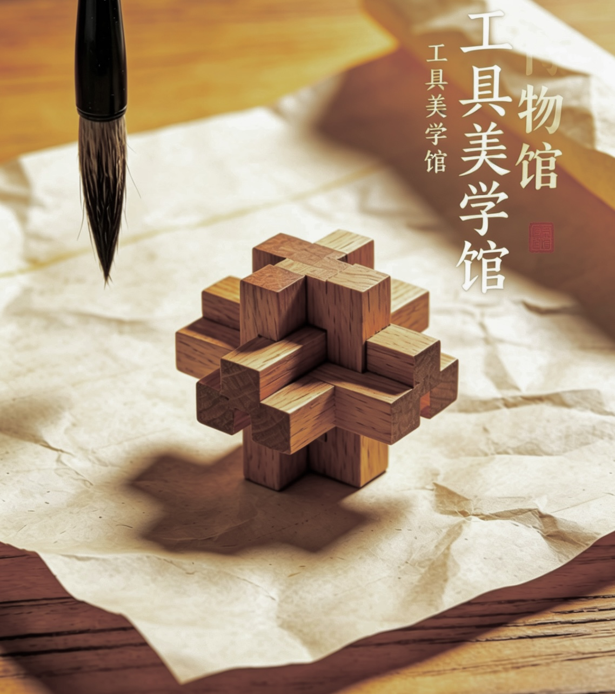

工具美学
TOOL
ESTHETICS
ESTHETICS

black and white gray with tension I'll thicken the paint just to generate some kind of power
TOOLS
black and white gray with tension I'll thicken the paint just to generate some kind of power